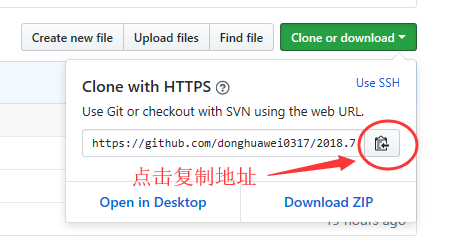
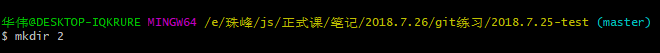
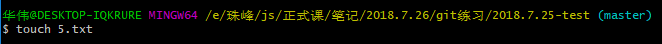
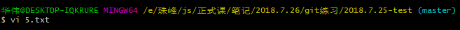
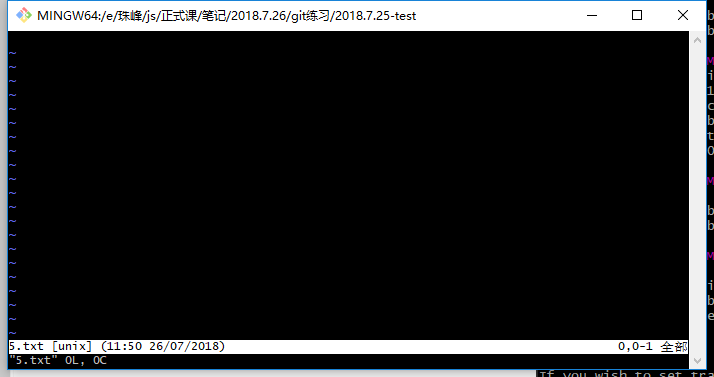
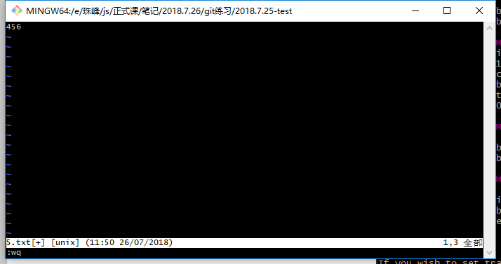
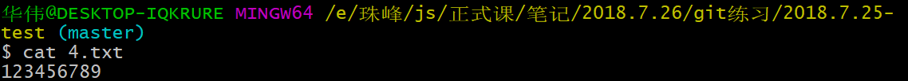
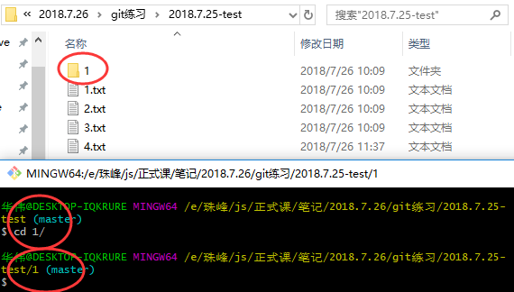
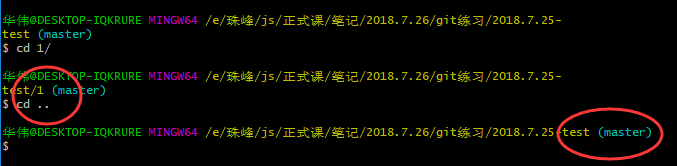

git基本操作过程2：
1、git clone https://xxx把远程库克隆一份到本地：

https://xxx是对应的远程库的链接：
2、克隆后的得到的本地库，默认桥梁是origin，此后在这个本地库中push和pull时，可以省略后边的桥梁名和分支名，世界输入git push和git pull。

git remote -v查看链接：

3、mkdir xxx新建文件夹：

4、touch xxx.xxx新建文件：

5、vi xxx.xxx修改文件：


进入如上图所示的界面后，点击i，然后进行编辑；编辑完成后，按esc退出编辑状态，再在英文输入法状态下输入:wq，退出该文件。

6、cat xxx查看文件内容：

7、cd 文件夹路径直接进入对应的文件夹：

8、cd ..或者cd ../返回上一级文件夹：
